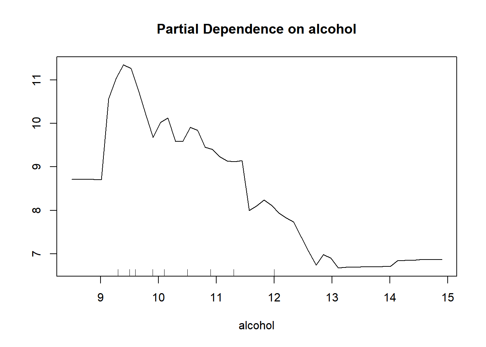

Chapter 16 Partial Dependence Plots
Produces partial plot for alcohol in training set data/rf model for classication 5 aka quality =5.
partialPlot(rf, train, alcohol, 5)
This plot tells u that when alcohol is less than 11% it predicts classification 5 more strongly than when it is greater than 11%.
partialPlot(rf, train, alcohol, 7)
This plot tells us that when alcohol is greater than 10% it predicts classification 7 more strongly than when it is less than 10%.
16.1 Introduction
Just planning to use this file to walk through some tutorials of k-means clustering I found.
16.2 Load Data
We have taken a data-set from Kaggle: https://www.kaggle.com/uciml/red-wine-quality-cortez-et-al-2009 This data-set inlcudes the measurements from the wine along with its quality rating.
wine<-read.table("data/winequality-red.csv",stringsAsFactors = FALSE,
sep=",",header = TRUE)
head(wine)## fixed.acidity volatile.acidity citric.acid residual.sugar chlorides free.sulfur.dioxide total.sulfur.dioxide density pH sulphates alcohol
## 1 7.4 0.70 0.00 1.9 0.076 11 34 0.9978 3.51 0.56 9.4
## 2 7.8 0.88 0.00 2.6 0.098 25 67 0.9968 3.20 0.68 9.8
## 3 7.8 0.76 0.04 2.3 0.092 15 54 0.9970 3.26 0.65 9.8
## 4 11.2 0.28 0.56 1.9 0.075 17 60 0.9980 3.16 0.58 9.8
## 5 7.4 0.70 0.00 1.9 0.076 11 34 0.9978 3.51 0.56 9.4
## 6 7.4 0.66 0.00 1.8 0.075 13 40 0.9978 3.51 0.56 9.4
## quality
## 1 5
## 2 5
## 3 5
## 4 6
## 5 5
## 6 516.3 Clean and Normalize the data.
Our dataset already contains only predictive values and output, so we do not need to remove any descriptive columns. We must normalize the values within the dataset to avoid any bias and remove the output variable (quality) since it’s the prediction.
#Normalization
normalize <- function(x) {
return ((x - min(x)) / (max(x) - min(x))) }
wine.normal <- as.data.frame(lapply(wine[,1:11], normalize))
head(wine.normal)## fixed.acidity volatile.acidity citric.acid residual.sugar chlorides free.sulfur.dioxide total.sulfur.dioxide density pH sulphates
## 1 0.2477876 0.3972603 0.00 0.06849315 0.1068447 0.1408451 0.09893993 0.5675477 0.6062992 0.1377246
## 2 0.2831858 0.5205479 0.00 0.11643836 0.1435726 0.3380282 0.21554770 0.4941263 0.3622047 0.2095808
## 3 0.2831858 0.4383562 0.04 0.09589041 0.1335559 0.1971831 0.16961131 0.5088106 0.4094488 0.1916168
## 4 0.5840708 0.1095890 0.56 0.06849315 0.1051753 0.2253521 0.19081272 0.5822320 0.3307087 0.1497006
## 5 0.2477876 0.3972603 0.00 0.06849315 0.1068447 0.1408451 0.09893993 0.5675477 0.6062992 0.1377246
## 6 0.2477876 0.3698630 0.00 0.06164384 0.1051753 0.1690141 0.12014134 0.5675477 0.6062992 0.1377246
## alcohol
## 1 0.1538462
## 2 0.2153846
## 3 0.2153846
## 4 0.2153846
## 5 0.1538462
## 6 0.153846216.4 Data Splice
Since our data-set our research question involves prediction will will randomly select a portion of data to use for overall effectiveness measurement. We plan to save about \(5\%\) of the data for testing which ends up being \(80\) values.
set.seed(123)
dat.d <- sample(1:nrow(wine.normal),size=nrow(wine.normal)*0.8,replace = FALSE) #random selection of 90% data.
train.wine <- wine.normal[dat.d,] # 90% training data
test.wine <- wine.normal[-dat.d,] # remaining 10% test data
#Creating seperate dataframe for 'Quality' feature which is our target.
train.quality_label <- wine[dat.d,12]
test.quality_label <-wine[-dat.d,12]Next, we’re going to calculate the number of observations in the training data set. The reason we’re doing this is that we want to initialize the value of ‘K’ in the KNN model. One of the ways to find the optimal K value is to calculate the square root of the total number of observations in the data set. This square root will give you the ‘K’ value.
NROW(train.quality_label) ## [1] 1279sqrt(NROW(train.quality_label) )## [1] 35.76311The square root of 1493 is around 35.7 we’ll create a model with a ‘K’ value as 36.
knn.36 <- knn(train=train.wine, test=test.wine, cl=train.quality_label, k=36)16.5 Model Evaluation
#Calculate the proportion of correct classification for k =37
ACC.36 <- 100 * sum(test.quality_label == knn.36)/NROW(test.quality_label)
ACC.36## [1] 58.4375As shown above, the accuracy for K = 36 is 58.435
16.6 Optimization
i=1
k.optm=1
for (i in 1:37){
knn.mod <- knn(train=train.wine, test=test.wine, cl=train.quality_label, k=i)
k.optm[i] <- 100 * sum(test.quality_label == knn.mod)/NROW(test.quality_label)
k=i
cat(k,'=',k.optm[i],'')
}## 1 = 61.875 2 = 56.875 3 = 56.875 4 = 61.25 5 = 59.0625 6 = 58.125 7 = 55.625 8 = 57.1875 9 = 57.5 10 = 56.875 11 = 59.0625 12 = 59.375 13 = 58.75 14 = 59.375 15 = 60 16 = 60.3125 17 = 61.25 18 = 60.9375 19 = 60 20 = 59.0625 21 = 59.375 22 = 59.375 23 = 59.6875 24 = 59.0625 25 = 58.125 26 = 58.125 27 = 59.0625 28 = 59.0625 29 = 58.4375 30 = 58.4375 31 = 58.75 32 = 59.375 33 = 60 34 = 60.3125 35 = 59.6875 36 = 59.0625 37 = 59.375#Accuracy plot
plot(k.optm, type="b", xlab="K- Value",ylab="Accuracy level")